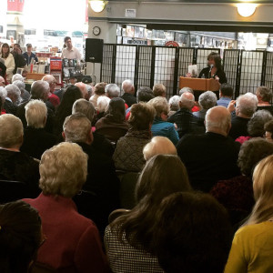
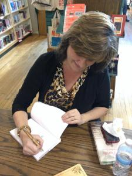

October 20, Spokane County Library District Annual Writing Conference, “The Heart of the Matter: the Art of the Interview, North Spokane Count Library, 44 E Hawthorne Rd. Time TBA.
  Click here to schedule a Speaking/Signing event with Cindy Hval“Ms. Hval was articulate, personable, and engaging with the audience. She was more of a story-teller than a formal lecturer which was part of her appeal for my forum.”
-Mrs. Dawn A. Altmaier, Community Support Coordinator
“Cindy was an excellent speaker. She talked to our group, then read from her new book War Bonds and answered questions from our members all in the time (35 min.) allotted. Good feedback from our members.”
-Lion Sandy Eberle, Program Committee
“I want to express my deep appreciation and that of the Spokane Veterans Forum for joining us last Thursday evening and doing a great job as moderator for our two WWII couples. Your light hearted presence and easy manner in leading the two couples was delightful.”
-Bernice Gutman, Spokane Veterans Forum
“I heard Ms. Hval speak at a book signing and she was articulate, personable, and engaging with the audience. I asked her to speak at the Lilac Festival All City Civic Military Luncheon after I heard her speak. The event was attended by many civic and military leaders—about 350 attendees in all. I only received positive feedback on her presentation. In the two times I have heard her present, she was more of a story-teller than a formal lecturer which was part of her appeal for my forum.”
-Mrs. Dawn A. Altmaier, Community Support Coordinator
“In the spring of 2016, Cindy Hval taught a workshop for my team of activity directors on how to better capture stories. As a senior housing provider, we strive to capture the stories of our residents in order to preserves memories, inspire others and bridge generational gaps. Cindy worked with me in forming a plan for the workshop based upon our goals and the skills of our staff. She was timely and clear in communication. Cindy’s interaction with our staff was warm and genuine while providing specific guidelines on how to improve. She taught my staff how to be better listeners in order to be better writers. She was knowledgeable about the population we serve and the nuisances of interviewing them. Each participant walked away with a new skill to better communicate our resident’s stories in various ways. Six months later the team that participated in the workshop are still using the tools they learned. We look forward to having Cindy provide more training for our staff."
-Debra S. Walker BSN, RN LNCC
Director of Wellness and Life Enrichment Services, Cascade Living Group